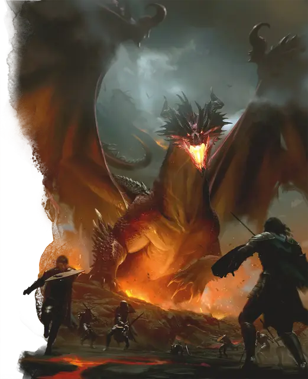

Древний красный дракон
Ancient Red Dragon
Громадный Дракон, хаотично-злой

Класс Доспеха 22 (природный доспех)
Хиты 546 (28к20 + 252)
Скорость 40 футов, летая 80 футов, лазая 40 футов
| мод | спас | ||
|---|---|---|---|
| СИЛ | 30 | +10 | +10 |
| ЛОВ | 10 | +0 | +7 |
| ТЕЛ | 29 | +9 | +16 |
| мод | спас | ||
|---|---|---|---|
| ИНТ | 18 | +4 | +4 |
| МДР | 15 | +2 | +9 |
| ХАР | 23 | +6 | +13 |
Навыки Восприятие +16, Скрытность +7
Иммунитет к урону огонь
Чувства слепое зрение 60 футов, тёмное зрение 120 футов, пассивное Восприятие 26
Языки Общий, Драконий
Опасность 24 (62000 опыта)
Бонус мастерства +7
Среда обитания Горы, Холмы
Особенности
Легендарное сопротивление (3/день). Если дракон проваливает спасбросок, он может вместо этого сделать спасбросок успешным.
Действия
Мультиатака. Дракон может использовать Ужасающее присутствие. Затем он совершает три атаки: одну укусом, и две когтями.
Укус. Рукопашная атака оружием: +17 к попаданию, досягаемость 15 футов, одна цель. Попадание: Колющий урон 21 (2к10 + 10) плюс урон огнём 14 (4к6).
Коготь. Рукопашная атака оружием: +17 к попаданию, досягаемость 10 футов, одна цель. Попадание: Рубящий урон 17 (2к6 + 10).
Хвост. Рукопашная атака оружием: +17 к попаданию, досягаемость 20 футов, одна цель. Попадание: Дробящий урон 19 (2к8 + 10).
Ужасающее присутствие. Все существа на выбор дракона, находящиеся в пределах 120 футов от него и знающие о его присутствии, должны преуспеть в спасброске Мудрости Сл 21, иначе станут испуганными на 1 минуту. Существо может повторять этот спасбросок в конце каждого своего хода, оканчивая эффект на себе при успехе. Если спасбросок существа был успешным, или эффект на нём окончился, оно получает иммунитет к Ужасающему присутствию этого дракона на следующие 24 часа.
Огненное дыхание (перезарядка 5–6). Дракон выдыхает огонь 90-футовым конусом. Все существа в этой области должны совершить спасбросок Ловкости Сл 24, получая урон огнём 91 (26к6) при провале, или половину этого урона при успехе.
Легендарные действия
Дракон может совершить 3 легендарных действия, выбирая из представленных ниже вариантов. За один раз можно использовать только одно легендарное действие, и только в конце хода другого существа. Дракон восстанавливает использованные легендарные действия в начале своего хода.
Обнаружение. Дракон совершает проверку Мудрости (Восприятие).
Атака хвостом. Дракон совершает атаку хвостом.
Атака крыльями (стоит 2 действия). Дракон бьёт своими крыльями. Все существа в пределах 15 футов от дракона должны преуспеть в спасброске Ловкости Сл 25, иначе получат дробящий урон 17 (2к6 + 10) и будут сбиты с ног. После этого дракон может пролететь на расстояние, не превышающее половину скорости полёта.
Логово
Красные драконы устраивают свои логова высоко в горах и холмах, обитая в пещерах под укрытыми снегом вершинами, в глубинах брошенных шахт и покинутых залах дварфских твердынь. Пещеры с вулканической и геотермической активностью выше прочих ценятся красными драконами, так как создают опасную среду, которая мешает нарушителям, и в то же время позволяет спать среди обжигающего жара и вулканических газов.
Хорошо спрятав свой клад, красные драконы проводят почти столько же времени вне логова, как и внутри. Для красного дракона высоты мира служат троном, с которого он может обозревать не только всё подконтрольное ему, но и новые горизонты для захвата.
Тем временем, по всему логову его слуги воздвигают монументы драконьей мощи, рассказывающие о пугающих историях его жизни, поверженных им врагах и народах, порабощённых им.
Действия логова
При значении инициативы «20» (в случае ничьей проигрывает всем конкурентам) дракон совершает действие логова, чтобы вызвать один из следующих эффектов; дракон не может использовать один и тот же эффект два раунда подряд:
• Магма вырывается из точки на полу, видимой драконом в пределах 120 футов, создавая гейзер 20 футов высотой и 5 футов радиусом. Все существа в области гейзера должны совершить спасбросок Ловкости Сл 15, получая урон огнём 21 (6к6) при провале, или половину этого урона при успехе.
• Логово вздрагивает от подземного толчка в радиусе 60 футов от дракона. Все существа, кроме дракона, стоящие на полу в этой области, должны преуспеть в спасброске Ловкости Сл 15, иначе будут сбиты с ног.
• Вулканические газы образовывают сферическое облако 20-футового радиуса с центром на точке, видимой драконом в пределах 120 футов. Сфера огибает углы и является слабо заслоняющей видимостью. Облако, держится пока не наступит очередь инициативы «20» следующего раунда. Все существа, начинающие ход в этом облаке, должны преуспеть в спасброске Телосложения Сл 13, иначе станут отравленными до конца своего хода. Отравленные таким образом существа недееспособны.
Местные эффекты
Регион, в котором есть логово легендарного красного дракона, искажается драконьей магией, которая создаёт один или несколько следующих эффектов:
• В пределах 6 миль от драконьего логова часто происходят небольшие землетрясения.
• Водные источники в пределах 1 мили от логова становятся неестественно тёплыми и пахнут серой.
• Каменистые разломы в пределах 1 мили от логова образуют порталы на План Стихийного Огня, позволяя существам оттуда проникать в мир и обитать неподалёку.
Если дракон умирает, эти эффекты угасают за 1к10 дней.
Опциональные правила
Драконы и врождённое колдовство. Драконы обладают врождёнными способностями к колдовству, и могут с возрастом осваивать новые заклинания при использовании этого опционального правила.
Молодые и более старые драконы могут накладывать количество заклинаний, равное их модификатору Харизмы. Каждое заклинание может быть наложено лишь один раз за день, не требуя материальных компонентов, и уровень заклинания не может превышать трети показателя опасности дракона (округляя в меньшую сторону).
Бонус к попаданию атак заклинаниями дракона равен его бонусу мастерства + его бонус Харизмы. Сл спасбросков от заклинаний дракона равна 8 + его бонус мастерства + его модификатор Харизмы. (Monster Manual)
Драконы и врождённое колдовство. Этот дракон от природы может накладывать шесть заклинаний, 1/день каждое, и ему не требуются для этого материальные компоненты. Уровень каждого заклинания не может быть выше 8-го. Заклинание дракона, имеют Сл спасброска 21, и он имеет +13 к попаданию атаками заклинаниями.
Ниже приведен список предлагаемых заклинаний, но вы также можете выбрать заклинания, отражающие характер дракона. Дракон, который от природы накладывает заклинания друидов, ведёт себя иначе, чем тот, кто накладывает заклинания колдуна. Вы также можете дать дракону заклинания более высокого уровня, чем позволяет это правило, но такая настройка может повысить ПО дракона — особенно если эти заклинания наносят урон или накладывают состояния на цели.
• Порча [bane];
• Подчинение личности [dominate person];
• Раскалённый металл [heat metal];
• Гипнотический узор [hypnotic pattern];
• Слово силы: оглушение [power word stun];
• Внушение [suggestion]. (Fizban's Treasury of Dragons)
Персонализация дракона. Как уже говорилось в «Руководстве Мастера», вы можете настроить блок статистики любого дракона, чтобы отразить его уникальный характер. Незначительные изменения, такие как приведенные ниже, легко сделать, и они не влияют на ПО дракона. (Fizban's Treasury of Dragons)
Языки. Большинство драконов предпочитают говорить на Драконьем, но для общения с союзниками и приспешниками изучают Общий. Но, учитывая высокий Интеллект и продолжительный срок жизни, драконы могут легко выучить дополнительные языки. Вы можете добавить языки в блок статистики дракона.
Навыки. Большинство драконов владеют навыками Восприятие и Скрытность, а многие драконы владеют дополнительными навыками. Как и в случае с языками, вы можете изменить список навыков дракона (даже удвоить бонус мастерства), чтобы отразить его интересы и занятия. Вы также можете наделить дракона владениями инструментами, особенно если дракон проводит время в гуманоидной форме.
Заклинания. Опциональное правило «Бестиария» о том, чтобы сделать драконов с врожденным колдовством, — это простой способ добавить драконам разнообразия, не влияя на их ПО. В Главе 5 «Дракономикон» предлагаются списки заклинаний для разных видов драконов, но вы также можете выбрать заклинания, отражающие характер дракона. Дракон, который от природы накладывает заклинания друидов, ведёт себя иначе, чем тот, кто накладывает заклинания колдуна. Вы также можете дать дракону заклинания более высокого уровня, чем позволяет это правило, но такая настройка может повысить ПО дракона — особенно если эти заклинания наносят урон или накладывают состояния на цели.
Другие черты и действия. Вы можете заимствовать черты и действия у других монстров, чтобы придать дракону уникальную изюминку. Рассмотрим эти примеры:
Изменение формы. Вы можете решить, что дракон приобретает это действие в более раннем возрасте, чем обычно, особенно если вы хотите представить в своей кампании дракона в гуманоидной форме. (См. металлические драконы).
Поглощение урона. Вы можете решить, что красный или золотой дракон не только не получает урон от огня, но и исцеляется от него. (См. мясной голем [flesh golem]).
Облёт. Дракон - проворный летун, быстро вылетающий из зоны досягаемости врагов. (См. перитон [peryton]).
Подражание. Изображение персонажей или их союзников может стать забавным трюком для хитрого дракона. (См. кенку [kenku]).
Омоложение. Вы можете решить, что драконы в вашей кампании, будучи неотъемлемой частью Материального плана, почти невозможно уничтожить. Жизненная сущность дракона может храниться в яйце, из которого он появился на свет, в его кладе или в пещерном зале в центре мира, так же как сущность лича спрятана в филактерии. (См. лич [lich]).
Особые чувства. У большинства драконов есть слепое зрение и темное зрение. Вы можете улучшить зрение до истинного зрения или наделить дракона скоростью рытья или чувством вибрации. (См. зрение и свет).
Прокладывание туннеля. Эта особенность может быть присуща любому дракону, обладающему скоростью копания - он может двигаться сквозь твёрдую породу, оставляя за собой туннель. (См. бурый увалень [umber hulk]).
Описание
Наиболее алчные из истинных драконов, красные драконы безустанно ищут способ пополнить свои сокровищ. Они исключительно тщеславны, даже по драконьим меркам. Их самомнение отражается в надменном обращении и презрении к другим существам.
Красный дракон отлично помнит ценность и происхождение каждого предмета в своей сокровищнице, также как и его точное место. Он может заметить пропажу одной монеты и впасть от этого в ярость, бросаясь в погоню за вором, чтобы безжалостно расправиться с ним. Не обнаружив вора, дракон будет бушевать, разрушая города и деревни в попытке утолить свой гнев.
Запах серы и пемзы окутывает красного дракона, которого легко узнать по изогнутым назад рогам и перепончатому гребню вдоль хребта. Из его ноздрей на похожей на клюв морде постоянно исходит дым, а в глазах вспыхивают огоньки, когда он злится. Размах крыльев красных драконов больше, чем у любого другого вида цветных драконов, а цвет их переходит от красного к иссиня-чёрному цвету пережжённого металла у края крыльев.
Чешуя вирмлинга красного дракона блестящая и ярко-алая, но темнеет и тускнеет с возрастом, становясь всё толще и крепче. Также их зрачки с возрастом исчезают, и глаза старейших красных драконов становятся похожи на колодцы расплавленной лавы.
Хозяева гор. Красные драконы предпочитают селиться в гористой местности, каменистых пустошах и других местах, где они смогли бы забраться достаточно высоко, чтобы осматривать свои владения. Время от времени это приводит их к конфликту с обитающими на холмах медными драконами.
Высокомерные тираны. Красные драконы часто впадают в разрушительную ярость и действуют импульсивно, если их разозлить. Многие культуры считают их классическими представителями злых драконов.
Ни один другой драконий вид даже отдалённо не сравнится с красными драконами по высокомерию. Эти существа считают себя не менее, чем королями и императорами, а другие драконьи виды ставят себе в подчинение. Веря в то, что они помазаны Тиамат править от её имени, красные драконы считают всех существ в мире своими подчинёнными.
Рабы и статус. Красные драконы — изоляционисты, и яростно защищают свою территорию. Впрочем, они стремятся узнать о событиях в мире, используя низших существ в качестве информаторов, посыльных и шпионов. Они наиболее заинтересованы в новостях о других красных драконах, с которыми они постоянно соревнуются.
Когда им необходимы слуги, красные драконы требуют верности от хаотично-злых гуманоидов. Если те отказывают им в преданности, драконы убивают лидеров племени и заявляют свою власть над выжившими. Существа, служащие красным драконам, живут в постоянном страхе быть испепелёнными или сожранными за то, что не угодили дракону. Большую часть времени они проводят в попытках задобрить владыку, чтобы остаться в живых.
Одержимые коллекционеры. Красные драконы ценят богатство более всего, а их клады поистине легендарны. Они присваивают всё, что имеет какую-то ценность и часто могут на глаз определить ценность вещицы, ошибаясь лишь на пару медяков. Красные драконы особенно любят сокровища, отобранные у убитых ими могучих врагов, выставляя такие вещи напоказ, как доказательство своего превосходства.
См. дополнительно статью: "Бестиарий: Драконы"